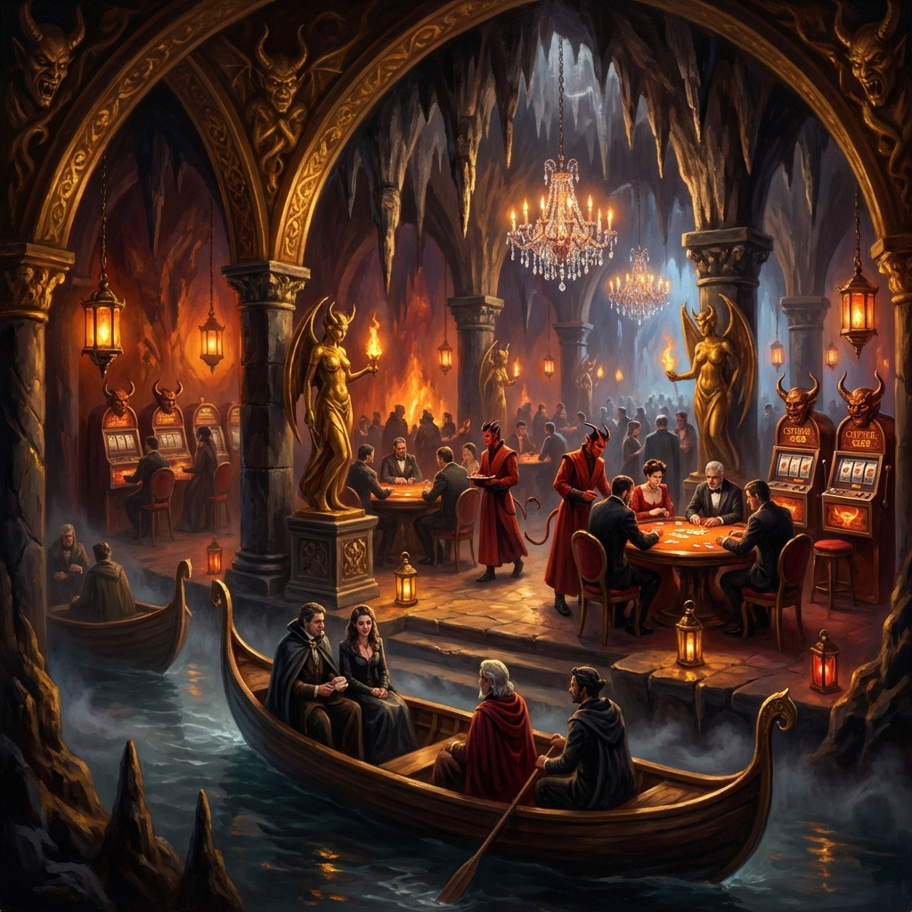

🔥 The Afterlife Casino
Nine Hells–themed gambling den built into a cavern carved by the River Styx
Overview
A newly opened gambling establishment built into a natural cavern in the mountains north of Varkenbluff. The casino opened just weeks ago—around the same time as the museum gala incident.
Rumors speak of decadent excess, high-stakes games, and a Nine Hells theme that's equal parts theatrical and unsettling.
Location
What We've Heard
- The river flowing through the cavern is nicknamed "The River Styx"
- Guests arrive by ferry, greeted by Charon-styled boatmen
- The interior features hellfire decor, devil statues, and crystal chandeliers
- Games include Three-Dragon Ante and copper slot machines
- Tiefling staff in red robes maintain the Nine Hells aesthetic
Ambiance
| Sense | Description |
|---|---|
| Sight | Hellfire glow; crystal chandeliers; decadent excess |
| Sound | Clinking coins; rolling dice; distant music |
| Smell | Incense; brimstone undertones; expensive perfume |
🎰 The team hasn't visited this location yet...